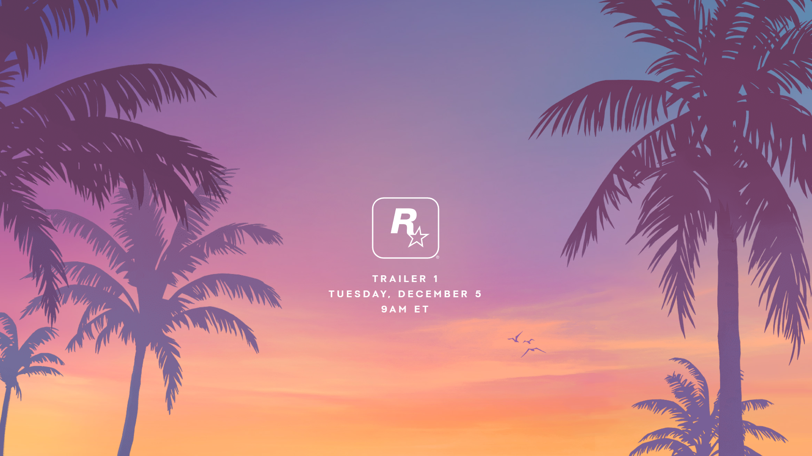
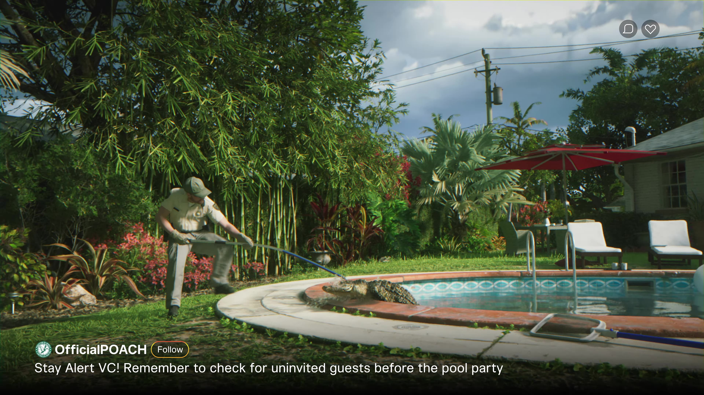

Todos os vazamentos do GTA VI
Por Pedro Morais

Anúncio do GTA 6 e os vazamentos
A comunidade da franquia de jogos Grand Theft Auto aguarda, há mais de uma década, por um novo título. Durante os últimos anos, muitos vazamentos ocorreram e alguns vieram até de uma ação hacker que invadiu os servidores da Rockstar Games.
GTA 6 teve seu primeiro trailer revelado, será ambientado em Vice City e chega em 2025. Após um vazamento do primeiro material de divulgação do jogo na rede social X (antigo Twitter), a Rockstar Games interrompeu a contagem regressiva para a revelação oficial do trailer, originalmente programada paras as 11h00 do dia 5 de dezembro, e publicou um vídeo em 4K de 1min30s mostrando os primeiros detalhes de um dos games mais aguardados de todos os tempos e confirmando que GTA 6 chega em 2025.
A protagonista do jogo, Lucia, é o grande destaque do trailer, embalado pela música "Love Is A Long Road", de Tom Petty. Assim como os rumores também apontavam, o jogo será ambientado em Vice City, cidade fictícia do universo de Grand Theft Auto inspirada em Miami. Confira o trailer abaixo: Clique aqui para conferir o video
O trailer mostra que Lucia é uma ex-presidiária que, ao que tudo indica, voltará à vida de crimes pouco após conseguir a liberdade e terá a ajuda do namorado numa vida fora da lei, mostrando que muito da essência que sempre caracterizou GTA, como tiroteios, perseguições, situações absurdas e muito sarcasmo, permanecerá no novo jogo da franquia. O casal aparece na primeira arte oficial do jogo e será o protagonista do jogo, e vazamentos apontam que o namorado de Lucia se chama Jason.
Toda a identidade visual de GTA 6, com cores fortes, festas com luzes neon destaque para as praias, além de um enorme outdoor com a palavra "Vice", reforça que o jogo realmente marca o retorno da franquia a Vice City, uma das cidades mais icônicas da série e queridas pelos fãs. O trailer também dá destaque às festas de Vice City, faz referências a vídeos curtos e um tanto bizarros que viralizam em redes sociais e mostra tanto as áreas luxuosas quanto a periferia de Vice City, mostrando que a temática dos contrastes e desigualdades sociais novamente será abordada em Grand Theft Auto, mas sempre com o humor ácido característico da Rockstar.
GTA 6 é o oitavo game principal da longeva franquia da Rockstar, uma vez que GTA Vice City e GTA San Andreas, sucessos do PlayStation 2 e Xbox, foram lançados entre GTA 3 e GTA 4, mas não são jogos numerados. O game chega com a missão de suceder o game de maior sucesso da história da Rockstar, GTA V, lançado em setembro de 2013 e que até hoje já vendeu mais de 190 milhões de cópias, sendo o segundo game mais vendido da história.
Grand Theft Auto tem sido alvo de diversos rumores nos últimos meses. Isso porque após continuar em alta desde o lançamento original, o anúncio de um novo título conquistou os fãs. Com pouquíssimas informações detalhadas sobre o projeto, GTA 6 tem sido rodados de leaks e rumores, que são majoritariamente falsos.
O que gerou a toda comunidade e aos desenvolvedores
GTA 6 foi um dos maiores anúncios de games de 2023, vindo logo no fim do ano. Inicialmente a Rockstar planejou revelar o primeiro trailer de GTA 6 em 5 de dezembro, mas o vídeo acabou vazando menos de 24 horas antes da estreia, o que fez a Rockstar antecipar a publicação.
Na época do vazamento, diversos desenvolvedores usaram seus perfis nas redes sociais para mostrar sua frustração com o vazamento. No entanto, apesar disso o trailer ainda foi um grande sucesso, fazendo os jogadores ficarem viciados em teorias e muito animados por uma das personagens jogáveis, Lucia, criando até mesmo mods dela em outros games.
Para facilitar o acompanhamento dos vazamentos, no ano passado, antes mesmo do lançamento do trailer oficial, membros da comunidade do GTA criaram um documento em PDF com 60 páginas que reúnia todas as informações não oficiais sobre personagens, armas, mapas, veículos e muito mais do próximo jogo da série.
Praticamente, todos os pequenos detalhes que puderam ser observados nos vídeos vazados do ano passado foram abordados no arquivo em PDF, o que torna o documento uma leitura bem interessante para os fãs que gostam de saber tudo sobre a franquia. Clique aqui para conferir o PDF
Vazamentos de informações pode causar euforia nos fãs, mas é desesperador para os professionais responsáveis pelo desenvolvimento. O tão aguardado trailer de GTA 6 circulou pelas redes sociais horas antes do previsto e os desenvolvedores da Rockstar mostraram sua indignação em seus perfis.
O trailer vazado mais de 12 horas antes do planejado continha uma marca d'água criptografada gigante, proporcionando uma experiência de visualização ruim para os fãs. Embora a conta de vazamento do X tenha sido suspensa, a postagem teve milhares de curtidas antes do vídeo ser retirado, ou seja, muitos fãs assistiram antes do previsto. A Rockstar lançou o trailer real em seus canais oficiais acompanhado do comentário "nosso trailer vazou, então assista ao filme real no YouTube."
A resposta pacífica da Rockstar não foi compartilhada pelos desenvolvedores, que mostraram a decepção pelo que aconteceu no X. “Isso é uma merda”, disse um desenvolvedor de GTA em uma postagem agora excluída. “Eu esperava assistir isso pela primeira vez amanhã junto com meus companheiros de equipe e colegas de trabalho. Sinto que merecíamos esse momento.”
Qual o futuro do game?
Claramente, há muito em jogo com GTA 6, e não apenas para a desenvolvedora Rockstar Games e sua empresa proprietária, Take-Two Interactive. Este é um jogo que alguns analistas preveem que acabará como o mais vendido de todos os tempos, o tipo de jogo que quebrará recordes na indústria do entretenimento. Em 2013, GTA 5 levou apenas três dias para ultrapassar US$ 1 bilhão faturamento por vendas, tornando-se o produto mais rápido a atingir esse número na história do entretenimento. GTA 6 pode atingir o mesmo US$ 1 bilhão em apenas 24 horas, ou até menos.
GTA 6 é o tipo de jogo que vai vender consoles. Espera-se que a Sony lance um PS5 Pro ainda este ano e, sem dúvida, se beneficiará da enorme demanda por GTA 6. Da mesma forma, o GTA 6 venderá mais unidades e Xbox Series X, Series S e qualquer atualização de hardware que a Microsoft planeje. Lembremos que GTA 6 não será lançado para PC no lançamento. Para jogar, você precisará possuir um PlayStation ou Xbox.
Será GTA 6 o lançamento mais importante da história dos games, como já foi sugerido? Demissões em massa continuam a dizimar a indústria de videogames, então GTA pode muito bem ser essa "salvação". Mas vamos lembrar das pessoas que estão trabalhando para tornar o GTA 6 uma realidade e dos problemas que enfrentam enquanto a indústria prende a respiração para que um jogo seja lançado.
O tão aguardado trailer de GTA 6 finalmente foi revelado oficialmente pela Rockstar Games, após 10 anos de espera finalmente tivemos novidades sobre o sucessor do popular Grand Theft Auto 5. Na nova aventura, estaremos de volta à icônica cidade de Vice City, que não aparecia na franquia desde GTA Vice City Stories, lançado em 2006. Com tamanha expectativa e sendo o jogo lançado após duas obras-primas da desenvolvedora, o sexto título numerado da franquia tem a árdua tarefa de superar e aprimorar o que GTA 5 e Red Dead Redemption 2 fizeram
Uma lição que GTA 6 precisa aprender com RDR2 e levar isso para o jogo é a possibilidade de entrar em diversas residências e estabelecimentos. Não há uma variedade gigantesca de locais que podemos entrar no game de faroeste da Rockstar, mas com o poder da nova geração e dos SSDs dos consoles podemos ver isso acontecer na nova produção do estúdio de maneira bem expandida, com o jogador entrando em casas aleatórias ou preestabelecidas para o jogador fazer o que quiser.
Conforme destacado no trailer, uma maior presença da vida animal poderá ser vista em GTA 6, o que pode ser de certa forma inédito na franquia. Eu sei que existem animais no quinto jogo numerado da franquia, mas possivelmente teremos uma fauna próxima a de Red Dead Redemption 2 no novo jogo da Rockstar. Porém, vejo como algo inviável tarefas como a caça a animais lendários como ocorria no jogo de faroeste. Mas veremos muito mais interações entre nosso personagem e a fauna do jogo, diferente dos Grand Theft Auto anteriores.
